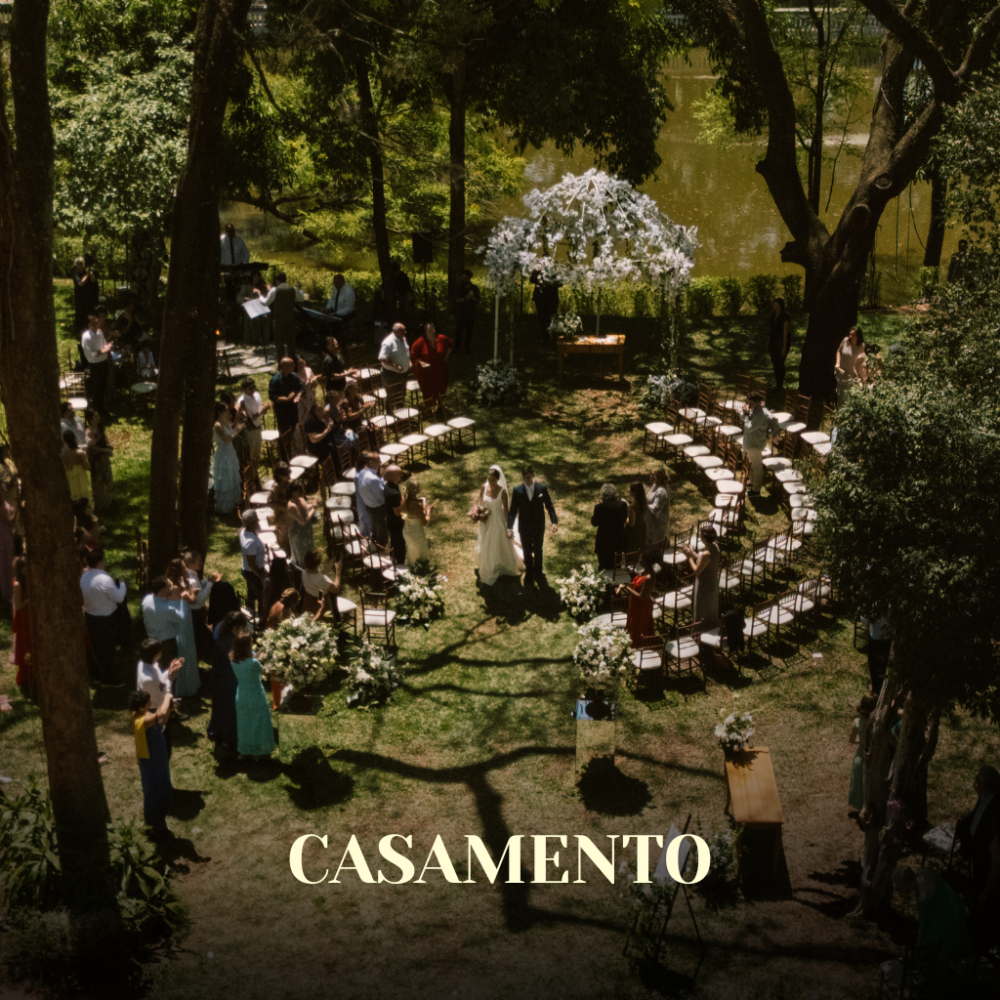
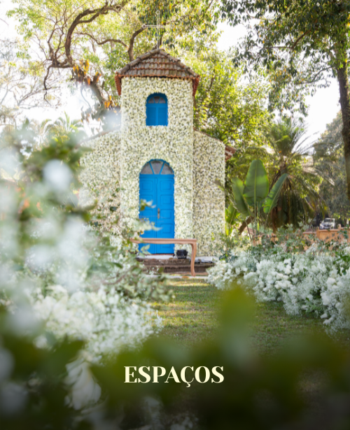
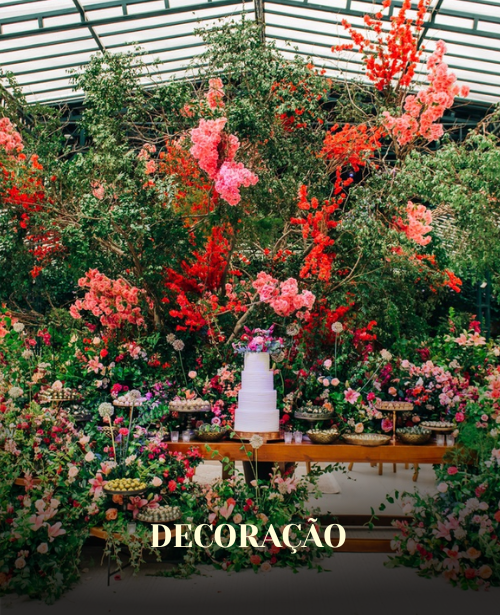

Di Terrá Eventos · Design System
Onde cada token compõe uma linguagem visual consistente
Explorar o SistemaDuas famílias apenas. Cormorant Garamond carrega toda a hierarquia editorial; Jost carrega interface, rótulos e corpo de texto. Cada linha abaixo é o elemento HTML e a classe reais do site — nada foi normalizado.
Serifada — hierarquia
Pesos 300, 400, 600 · itálico 300 e 400.
Usada em: hero, headings, números de card, citação do banner, CTA do rodapé, preloader.
--font-serif: 'Cormorant Garamond', Georgia, 'Times New Roman', serif
Sem-serifa — interface
Jost · Di Terrá
Pesos 200, 300, 400.
Usada em: corpo de texto, navegação, botões, rótulos de formulário, eyebrows, metadados.
--font-sans: 'Jost', 'Helvetica Neue', Arial, sans-serif
Não existe nenhum estilo Jost em corpo grande neste sistema — toda a escala acima de 15px é serifada. A sem-serifa aparece só em 10–14px, sempre com tracking aberto.
.hero-title
Cormorant 600 · .06em · caixa alta
.heading-lg
Cormorant 300 · .03em · caixa alta
.card-title
Cormorant 400 · .02em · caixa mista
.hero-eyebrow
Jost 400 · .3em · caixa alta
Piracicaba · Interior de São Paulo
.eyebrow
Jost 300 · .25em · caixa alta · régua ::before
.form-label
Jost 400 · .15em · caixa alta
Tipo de Evento
.hero-sub
Cormorant 400 itálico · .04em
Onde cada detalhe compõe uma experiência inesquecível
.body-text
Jost 300 · medida máx. 520px
O Di Terrá nasceu da convicção de que cada celebração merece um cenário à altura de sua importância. Mais do que um espaço, oferecemos uma arquitetura de experiências.
.footer-bottom
Jost 200 · .06em
Não existe texto com gradiente neste sistema — os gradientes aparecem apenas como fundo: overlays de imagem, barra do preloader e a linha de scroll do hero. Ver § 2.
Cremes e off-whites carregam as seções claras; o quase-preto carrega as seções de contraste. Teal e dourado aparecem só como acento — o teal em interação, o dourado só no preloader.
O teal aparece em: foco de campo, hover de link de contato, ícones de contato e ::selection. O dourado aparece exclusivamente no gradiente de .loader-bar.
Não há glassmorphism nem backdrop-filter neste sistema. A profundidade vem de sombra projetada, sobreposição de camadas (wrapper sobre rodapé fixo) e de uma textura de ruído global a 3% de opacidade — .noise-overlay, SVG feTurbulence inline.
Borda clara
--color-border · rgba(0,0,0,.08)Borda de card escuro
rgba(255,255,255,.08)Borda de botão social
rgba(255,255,255,.1)Régua vertical
.vert-line · 1×64 · rgba(0,0,0,.15)Cada estado abaixo usa a marcação e as classes reais. Hover e foco são forçados por classes .ds-force-* que replicam literalmente as declarações :hover e :focus do CSS original.
Mecânica: um pseudo-elemento ::before branco faz scaleX(0 → 1) em .5s var(--ease), invertendo o transform-origin de right para left. A seta desloca 4px em .4s var(--ease-out).
Sem estilo :disabled definido — o botão fica visualmente idêntico ao default.
Default
Focus — borda teal
Não existe estado de erro no sistema — a validação é a nativa do HTML via required, sem classe ou estilo próprio. A transição de foco é border-color .4s var(--ease) e o outline é removido.
Default

Hover — imagem 1.06 · overlay opacity 1 · texto translateY(0)
Abaixo de 768px o overlay passa a opacity: 1 permanente — em toque não há hover.
Cerimônias · Coquetéis · Pôr do Sol

Régua de 32×1px via ::before. Em cabeçalhos centralizados o site aplica display:none na régua.
48×1px, opacity .2, revelada por scaleX(0→1) em .8s var(--ease).
Um contêiner de 1200px para texto, grades soltas de até 1400px para mídia. Todo espaçamento vertical é fluido via clamp() — não há escala de espaçamento discreta.
--container-max
.container. Grades de mídia escapam para 1400px.--gutter
--section-pad
--radius-xl · 28px
.card-inner · .intro-image · .form--radius-lg · 22px
.evento-card · .galeria-item--radius-md · 16px
declarado, sem uso em componente--radius-sm · 12px
.btn · .form-input · .form-selectTexto à esquerda com medida travada em 520px, imagem à direita em proporção 3/4 e raio de 28px. O gap é fluido: clamp(40px, 6vw, 100px).

Todo movimento sai de duas funções de easing e de quatro bibliotecas: GSAP + ScrollTrigger para parallax, reveal e pilha de cards; Lenis para rolagem suave; AOS para entrada por scroll; GLightbox para a galeria.
--ease · padrão
cubic-bezier(.15,.75,.5,1)
Usada em quase toda transição CSS: botões, links, zoom de imagem, overlays, foco de campo, régua decorativa.
--ease-out · saída rápida
cubic-bezier(.25,1,.33,1)
Usada apenas no deslocamento da seta dentro de .btn.
.3s var(--ease).4s var(--ease).5s var(--ease).8s var(--ease)1.5s ease2.5s var(--ease)Entra ao cruzar 60px antes da viewport.
delay 0 · 100 · 200 · 300
position sticky · top 10vh · height 80vh
Recepções · Jantares · Festas
Não há biblioteca de ícones. Todos são SVG inline em três famílias: a seta de ação em contorno de 1px que herda currentColor, os ícones de contato preenchidos em teal e os logos sociais preenchidos em branco translúcido.
O único tamanho em uso no site é 14×10. Ampliações mantêm stroke-width 1 no espaço do viewBox, então o traço engrossa proporcionalmente ao ampliar — use vector-effect="non-scaling-stroke" se precisar de outro tamanho.
O logotipo da nav usa filter brightness(0) invert(1) para virar branco puro, combinado com mix-blend-mode difference na barra — é por isso que ele se inverte sozinho ao cruzar seções claras e escuras.
{kind=link}
{kind=link}
{kind=link}
{kind=link}
{kind=link}
{kind=link}